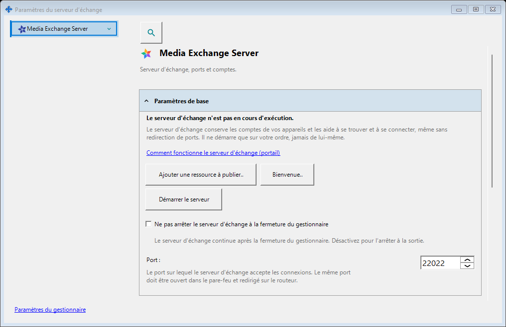
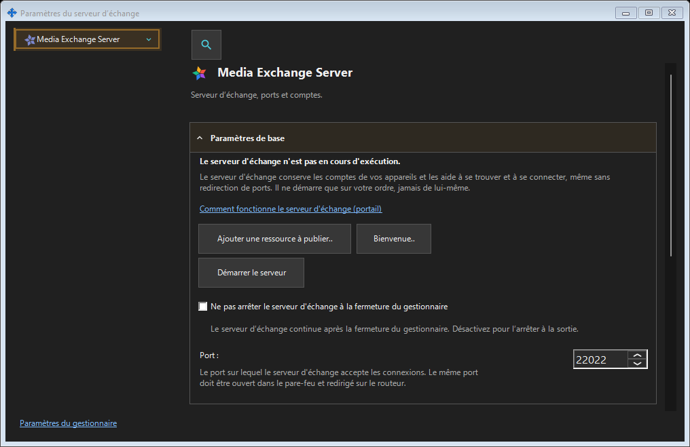

Paramètres du serveur d’échange
Objectif
SFTP : port, limite de connexions, réseau local et service Windows. Serveur d’échange : adresse, TLS, comptes, appareils, invitations, service, journaux et administration distante.


Dans cet ordre
Ouvrez depuis la zone de notification ou les liens des composants. Ouvrir et fermer ne démarre ni n’arrête un serveur. La connexion distante ne nécessite pas de serveur local.
Les éléments
Paramètres du serveur d’échange
SFTP : port, limite de connexions, réseau local et service Windows. Serveur d’échange : adresse, TLS, comptes, appareils, invitations, service, journaux et administration distante. Ouvrez depuis la zone de notification ou les liens des composants. Ouvrir et fermer ne démarre ni n’arrête un serveur. La connexion distante ne nécessite pas de serveur local.
Paramètres du gestionnaire · Paramètres de partage SFTP · Paramètres du serveur d’échange